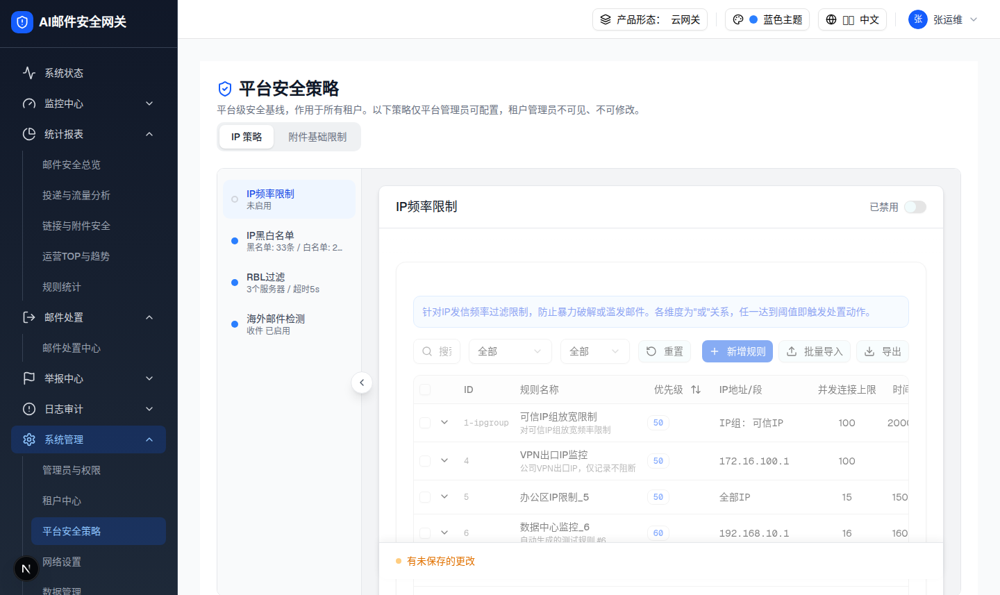

| 所属组件 | 2.3 IP 策略面板（主文件 §2.3）层级 2 |
| 主文件 | admin-platform-security/index.html |
| 触发路径 | 层级0 点击卡片头部启用开关（checked→unchecked）→ togglePolicyEnabled + setHasUnsavedChanges(true) |

| 元素 | 启用态 | 禁用态（本层） |
|---|---|---|
| Switch | data-state=checked（bg-primary） | data-state=unchecked（bg-input 灰） |
| 状态文字 | 已启用（text-blue-600） | 已禁用（text-gray-500） |
| 内容区 | 正常可交互 | opacity-50 pointer-events-none（变灰且不可点） |
| 导航圆点 | bg-blue-500 实心 | border-2 border-gray-300 空心 |
| 导航摘要 | 阈值: 100次/分钟 | 未启用 |
| 底部操作栏 | 无提示 | 琥珀脉冲圆点 + 「有未保存的更改」（无二次确认，即时切换） |
| 比对项 | demo 实际 DOM | 提取的 HTML | 是否一致 |
|---|---|---|---|
| 根节点 | div.flex.items-center.justify-between | div.flex.items-center.justify-between | ✅ |
| 直接子节点数 | 2 | 2 | ✅ |
| 节点总数 | 6 | 6 | ✅ |
| 开关状态 | data-state=unchecked / aria-checked=false | 一致 | ✅ |
| 状态文字 | 「已禁用」text-gray-500 | 一致 | ✅ |